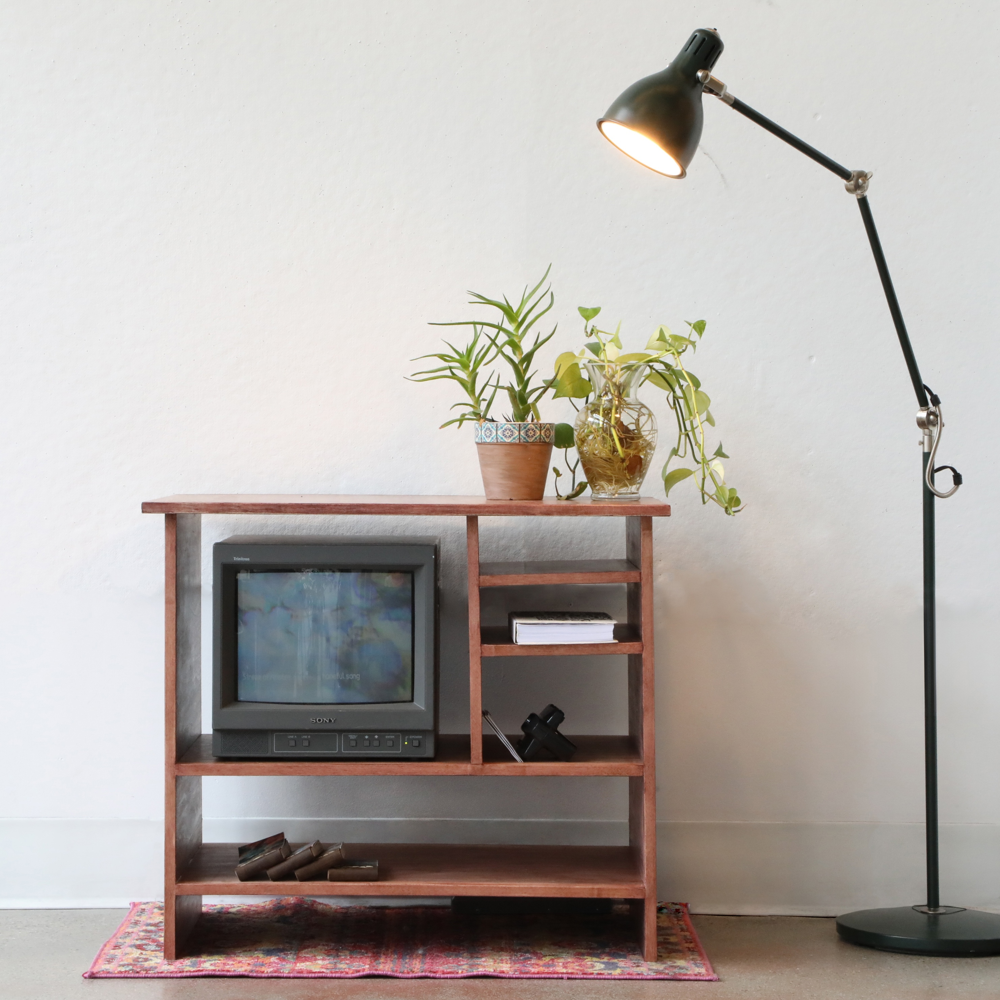
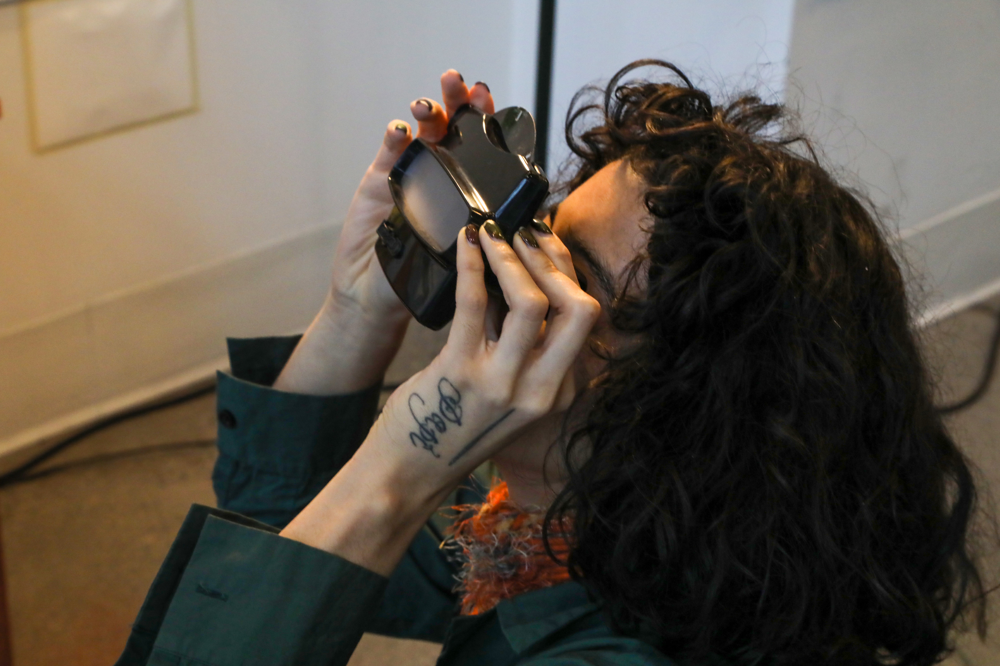
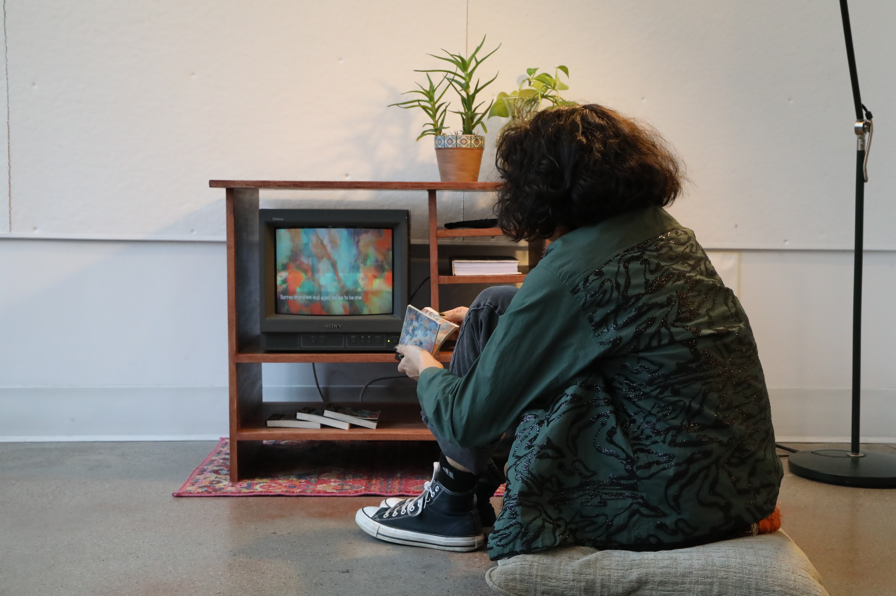
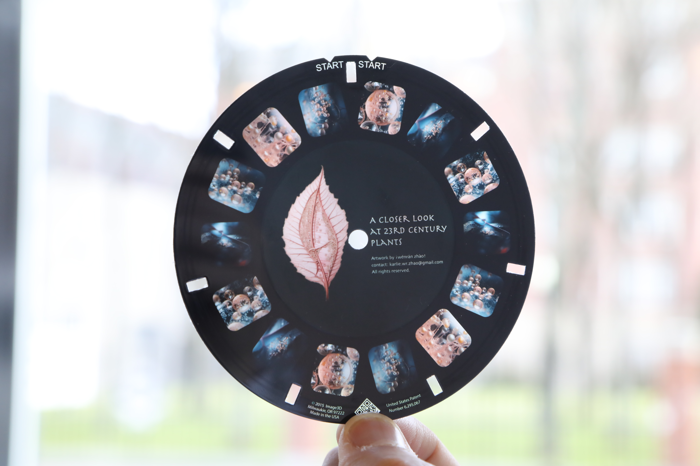

Cabinet of Artificial Memories
In colaboration with
Seung Ho JeonNov 2023 - Jan 2024
Tools
GPT-4, Stable Diffusion LoRA model, Midjourney, Python, JavaScript.
Cabinet of Artificial Memories is an experiment in which digital
artifacts bleed into the physical world through various media: flipbooks and animation created with a
self-trained AI model, view-master and reels of fantastical photos, and a dictionary composed of
GPT-generated acrostic poems.
Each piece represents a significant technological revolution: from traditional print media to the
Victorian era invention of stereoscopy, from the modern popularization of cathode ray tube TVs to the
state-of-art Generative AI. These vessels hold contents generated by Artificial Intelligence under the
artists’ manipulation, presented in a hand-crafted cabinet, weaving the history of technology within the
aesthetics of nostalgia and romanticism. What is the algorithm: a tool for society’s advancement, an
adversary to human endeavor, a threat to societal equality, or an escape from the physical world? Hasn’t
it always been the pursuit of humanity to venture into the unexplored territories that technology has
unveiled?
This series of works strive to capture the modernity of our technologically oriented society and invites
the audience to explore the implications of a physical and virtual presence.



